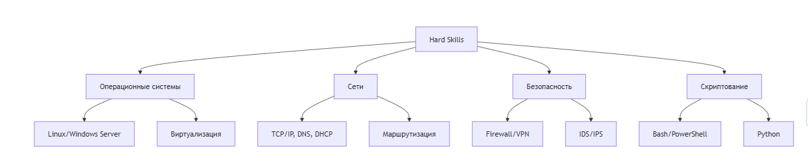

Администрацирование информационных систем
Системный администратор (сисадмин, админ, IT-администратор)— это специалист, отвечающий за работоспособность, безопасность и развитие информационной инфраструктуры организации.
| Аналогия: Если организация — это организм, то системный администратор — это: |
- Иммунная система (защита от угроз)
- Нервная система (коммуникации и управление)
- Кровеносная система (передача данных)
- Врач (диагностика и лечение проблем)
Основные обязанности системного администратора
Технические обязанности:
- Установка и настройка:
- Серверного оборудования и ПО
- Сетевого оборудования
- Рабочих станций пользователей
- Безопасность:
- Настройка брандмауэров
- Управление правами доступа
- Защита от вирусов и атак
- Резервное копирование
- Поддержка пользователей:
- Консультации
- Решение проблем
- Обучение
Административные обязанности:
- Документирование инфраструктуры
- Планирование бюджета IT-отдела
- Ведение технической документации
- Взаимодействие с вендорами
Навыки и компетенции
Hard Skills (технические навыки):

Soft Skills (личностные качества):
- Коммуникабельность — общение с пользователями разного уровня подготовки
- Стрессоустойчивость — работа в условиях сбоев и дедлайнов
- Аналитическое мышление — поиск корневых причин проблем
- Обучаемость — постоянное изучение новых технологий
- Ответственность — от работы админа зависит функционирование всей организации